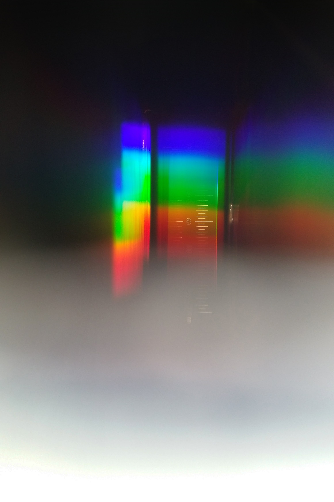

스펙트럼은 흔히 빛을 프리즘 등의 도구로 색에 따라 분해해서 살펴보는 것을 일컫는다. 넓은 의미로, 어떤 복합적인 신호를 가진 것을 1~2가지 신호에 따라 분해해서 표시하는 기술을 일컫는다.
아이작 뉴턴은 빛의 성질을 밝히기 위해 다양한 스펙트럼 실험을 했으며, 그 뒤, 어떤 물질의 성질을 알아내기 위해 그 물질을 태울 때 나오는 빛의 스펙트럼을 살펴보면서 과학 연구의 한 방법으로 자리 잡기에 이르렀다.
스펙트럼에 대한 연구를 분광학이라고 하며, 현대 천문학의 방법론에서 매우 중요한 위치를 차지하고 있다.
파장에 따라 전자기파를 순서대로 늘어놓은 띠이며, 빛을 다른 파장의 광선으로 분리하는 삼각 프리즘, 혹은 다른 기구를 빛이 통과할 때 얻어지는 색깔띠의 연속이다.
